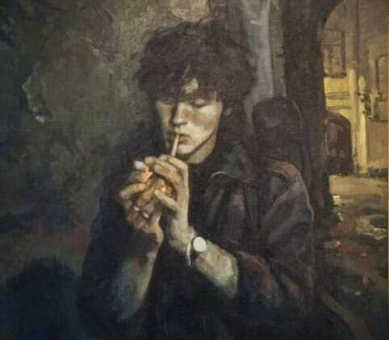
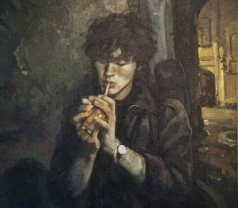

Our Vision
Kami percaya pada permintaan besar untuk perubahan lingkungan di Asia Tenggara. Kami menyadari bahwa generasi muda Asia yang sebagian besar aktif di media sosial mulai menyadari ancaman perubahan iklim dan dampak negatif dari pencemaran lingkungan.
Kami yakin bahwa pada tahun 2020-an kesadaran akan semakin meningkat seiring dengan berkembangnya ekonomi sirkular. Misi kami adalah menyediakan pengetahuan, informasi faktual, dan pemahaman bersama lintas sektor dan populasi di Asia Tenggara.
 
